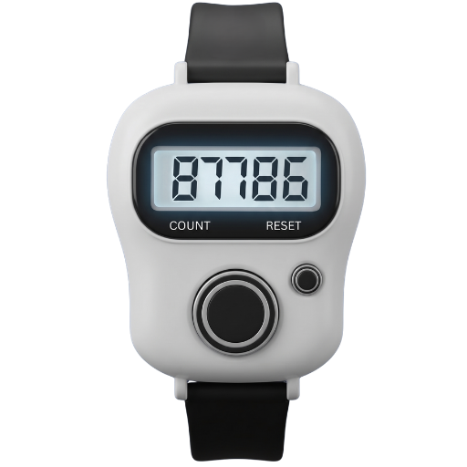

Multiple counters
Keep separate tallies for activities such as reading, exercise, and a stock check instead of mixing their totals.
Counter Pro helps you track tasbih, workouts, habits, inventory, scores, and daily progress with a clean and simple interface.

Explore a few of the visual finishes available in the Counter Pro design collection.


Keep a clear total for the small, repeatable tasks that make up your day.
Keep separate tallies for activities such as reading, exercise, and a stock check instead of mixing their totals.
Update the count as each event happens, so you can stay focused rather than keeping the running number in your head.
Begin a new counting session when the current task is complete. Record important totals elsewhere before resetting.
Count repeatable actions such as pages read, study sessions, or water servings by choosing a consistent unit.
Keep a simple tally of completed repetitions or rounds, while following your own training and rest plan.
Use a manual count for products, visitors, or orders, then enter confirmed figures into your business records.
Counter Pro works for both personal routines and regular daily tasks.
A consistent method helps make the final number easier to trust and understand.
Choose one activity and decide what one tap means. It might be one completed repetition, one item, or one visitor entry. If you are counting a group, decide whether you count each person or the group as one.
Update the tally when the event happens instead of relying on memory later. If you are interrupted, pause and confirm where you left off before continuing.
Confirm the final number and write it down elsewhere if you need a lasting record. Only reset when you are ready to begin a separate session.
Choose a focused guide with examples for the task you want to track.
See how to define a tally and use it for quick, repeated counts throughout the day.
Tally counter appLearn ways to keep your place during personal recitation without rushing the practice.
Tasbih counter appCount completed reps and keep a basic tally separate from a full training log.
Rep counter appChoose countable units for reading, study blocks, or another repeatable routine.
Habit counter appCount products methodically and learn when to record results in inventory software.
Inventory counter appOrganize separate tallies so unrelated totals are easier to understand.
Multiple counter appA counter can make repeatable actions visible without turning your day into a spreadsheet.
A little structure helps prevent one activity's total from being confused with another.
01Give each count one purposeKeep workout reps separate from a stock tally.
02Keep the unit consistentDecide whether a count means one item, task, or full round.
03Record before you resetMove important totals to the right record before clearing.
A tally is a good fit when you need a quick total for a clearly defined, repeatable event.
Exercise repetitions, personal routines, a temporary visitor estimate, or any clearly defined event where you need a quick total.
If you need dates, names, audit details, automatic reminders, or stock reconciliation, use a system designed to store that information. Counter Pro is a counter, not a replacement for detailed inventory, health, or business records.
A lightweight counter for everyday tasks and routines.